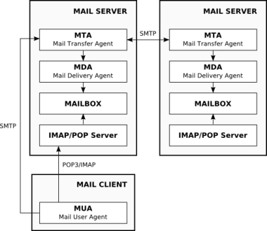

Recenzia ESET Server Security pre Linux/BSD (2)
Prvá časť recenzie predstavila architektúru produktov ESET Server Security a obsahovala tiež podrobnejší popis jedného z nich - ESET Gateway Security. Dnes sa bližšie pozrieme na možnosti, ktoré ponúkajú ESET Mail Security a ESET File Security vo verzii 2.71.12.
1. ESET Mail Security
Skôr než sa pustím do popisu produktu ESET Mail Security, ktorého úlohou je vykonávať antivírusovú a antispamovú kontrolu na poštovom serveri, pripomeňme si architektúru bežného unixového poštového subsystému.

Obr.1: Komponenty poštového systému
Základným prvkom je MTA (Mail Transfer Agent) komunikujúci s okolitým svetom prostredníctvom protokolu SMTP (Simple Mail Transfer Protocol). Hlavnou úlohou MTA je odosielanie (angl. mail relay) a prijímanie pošty. Ak MTA od iného serveru príjme správu pre používateľa v obsluhovanej doméne, odovzdá ju na spracovanie MDA (Mail Delivery Agent), ktorého úlohou je správy doručiť do schránky (angl. mailbox) používateľa. Používateľ si poštu môže vyzdvihnúť prostredníctvom MUA (Mail User Agent), ktorý kontaktuje IMAP (Internet Message Access Protocol) alebo POP (Post Office Protocol) server, ktoré majú priamy prístup k schránkam. MUA odosiela správy pomocou protokolu SMTP priamo cez MTA. Výmena správ medzi dvoma rôznymi servermi je len výmenou správ medzi ich MTA a prebieha s využitím protokolu SMTP.
Aby sme nezostali len pri nezáživnom popise obrázku, pridajme pár príkladov programov implementujúcich jednotlivé komponenty. Medzi najznámejších MTA patria určite aplikácie Postfix a Sendmail, ktoré sa často využívajú v spojení s programom maildrop alebo procmail v úlohe MDA. Ak by ste na webe hľadali voľne dostupný IMAP server, takmer určite by ste objavili Dovecot alebo Courier-IMAP. Pre koncového používateľa je bez pochýb najznámejšou súčasťou popisovaného systému MUA a do tejto skupiny programov patrí napríklad Mozilla Thunderbird alebo Evolution.
Modulárna architektúra unixového poštového subsystému poskytuje pre zavedenie antivírusovej a antispamovej kontroly viacero príležitostí. To je tiež jeden z dôvodov, prečo ESET Mail Security obsahuje podstatne viac agentov než Gateway alebo File Security.
Osobne považujem za najvýhodnejšie integrovať kontrolu pošty priamo do MTA, pretože týmto komponentom prechádza každá prijatá či odosielaná správa.
ESET Mail Security je možné jednoducho integrovať so štyrmi najpoužívanejšími MTA a sú to Sendmail, Postfix, Exim a QMail.
Integráciu zabezpečujú agenti ESETS_MDA, ESETS_SMTP alebo v prípade Sendmail-u aj agent ESETS_SMFI, ktorý s ním spolupracuje ako content-filter.
Agent ESETS_MDA je v podstate transparentný MDA, ktorý sa pri inštalácii umiestňuje medzi MTA a reálneho MDA.
Vykonáva teda antivírusovú a antispamovú kontrolu správ tesne pred ich doručením do schránky používateľa a v takomto scenári použitia kontroluje iba prichádzajúcu poštu.
Pre MTA Exim a QMail sa však tento agent používa aj na kontrolu odosielanej pošty, čo sa dá dosiahnuť špeciálnou konfiguráciou a jeho umiestnením pred príslušnú frontu správ.
Agenta ESETS_SMTP je možné použiť ako transparentné proxy pre protokol SMTP a tiež ako content-filter pre MTA Postfix.
Jeho najväčšou výhodou je, že môže vykonávať kontrolu všetkých SMTP spojení a teda kontrolovať nielen poštu prichádzajúcu z externých systémov, ale aj poštu odosielanú používateľmi poštového systému.
Podobne ako ESETS_SMTP aj agenti ESETS_IMAP a ESETS_POP3 slúžia ako proxy servery pre rovnomenné protokoly IMAP a POP3.
Môžete ich umiestniť pred reálny POP3/IMAP server a zabezpečiť tak kontrolu správ tesne pred ich sprístupnením koncovému používateľovi.
Agent ESETS_CLI je určený pre použitie s open-source nástrojom AMaViS, ktorého cieľom je vytvoriť rozhranie umožňujúce prepojenie MTA s ľubovoľným antivírusovým softvérom.
Po preštudovaní dostupných materiálov som však získal pocit, že AMaViS má viac nevýhod než výhod.
Ak ho použijete s ESET Mail Security, nemôžete využívať antispamovú kontrolu, nemôžete zo správ odstrániť infikované prílohy, nemôžete modifikovať telo správy a pridať do neho informáciu o nájdenom víruse atď.
Preto som sa ani neunúval overiť či je môj pocit správny. Ak má niekto s AMaViS-om dobré skúsenosti, napíšte o nich prosím do diskusie.
Ak sa v problematike poštových serverov príliš neorientujete a čelili by ste niekedy úlohe implementovať na poštový server antivírusovú a antispamovú kontrolu, nemusíte sa báť.
Súčasťou ESET Mail Security je program esets_setup, ktorý váš systém automaticky nakonfiguruje pre použitie vami zvoleného agenta.
Samozrejme zálohuje všetky modifikované súbory, takže môžete jeho činnosť skontrolovať alebo jednoducho vrátiť systém do pôvodného stavu.
Osobne som vykonával testy na poštovom serveri používajúcom Postfix ako MTA a Dovecot ako IMAP server.
Konfigurácia pomocou inštalačného programu esets_setup prebehla bez najmenších problémov.
Prekvapila ma najmä vysoká úspešnosť antispamovej kontroly využívajúcej technológiu spoločnosti MailShell.
Konfigurácia antispamového modulu je umiestnená v súbore spamcatcher.conf, ktorý už pri prvom pohľade celkom nezapadá medzi ostatné konfiguračné súbory a k jeho odlišnosti prispieva aj fakt, že v ňom obsiahnuté nastavenia nie je možné meniť prostredníctvom webového konfiguračného rozhrania.
V dokumentácii k Mail Security je téme antispamovej kontroly bohužiaľ venovaná len jedna krátka kapitola, a tak si náročnejší používateľ bude musieť vystačiť s komentármi v konfiguračnom súbore.
Antispamový modul pridáva do kontrolovaných správ hlavičku, ktorá obsahuje dosiahnuté spamové skóre v rozsahu 0 - 100. Správcovi teda nič nebráni nakonfigurovať MDA tak, aby na základe tejto hlavičky ukladal správy s vyšším skóre v schránke používateľa do samostatného adresára. Filtrovanie správ podľa tejto hlavičky sa však dá ponechať aj na MUA koncového používateľa. V prípade, že správa obsahuje vírusom infikovanú prílohu, môže byť v závislosti od nastavenia systému odstránená a do tela správy je následne pridaná podrobná informácia o objavených infiltráciách.
Myslím si, že vďaka veľkému počtu agentov a s nimi spojenými mnohými možnosťami nasadenia si ESET Mail Security nájde svoje miesto na nejednom linuxovom poštovom systému. Jeho masovému rozšíreniu medzi menšími poskytovateľmi však pravdepodobne zabráni cena licencií, ktorá sa odvíja od počtu používateľov poštového systému. Aktuálnu cenu môžete podobne ako pri Gateway Security zistiť v on-line objednávkovom systéme.
2. ESET File Security
Ako už názov napovedá, hlavnou úlohou ESET File Security je vykonávať antivírusovú kontrolu súborov na pripojených diskových oddieloch. Na kontrolu súborov sú vo všeobecnosti aplikovateľné dva prístupy: kontrola na vyžiadanie (z angl. on-demand scanning) a kontrola pri prístupe (z angl. on-access scanning).
Kontrola na vyžiadanie je v prípade File Security zabezpečovaná programom esets_scan.
Tento program ako jediný z celej produktovej rady môže pracovať samostatne bez služby esets_daemon.
Spúšťa sa z príkazového riadka a jeho syntax je veľmi jednoduchá.
Kontrolu súborov v adresári /mnt/sdc3 spustíte príkazom:
# esets_scan /mnt/sdc3
Výsledok je zobrazovaný na štandardný výstup a v prípade, že ho chcete zaznamenať do systémových logov, budete musieť k príkazu pridať niekoľko dodatočných parametrov.
Program esets_scan je vhodné použiť najmä v prípadoch, keď potrebujete vykonať jednorazovú kontrolu alebo keď chcete vykonávať antivírusovú kontrolu na vybraných súboroch v pravidelných intervaloch.
Túto činnosť môžete zabezpečiť napríklad vytvorením plánovanej úlohy pomocou daemona cron.
V niektorých prípadoch je však možné považovať za nevýhodu, že medzi jednotlivými kontrolami môže používateľ na disk nakopírovať infikovaný súbor a vymazať ho skôr než bude antivírusovým programom objavený.
Túto nevýhodu odstraňuje kontrola súborov pri prístupe (on-access scanning) a s produktom ESET File Security si môžete vybrať spomedzi dvoch spôsobov jej vykonávania.
Môžete použiť preload knižnicu libesets_pac.so alebo agenta ESETS_DAC.
Preload knižnica libesets_pac.so odchytáva volania štandardných open a open64 funkcií knižnice LIBC, zabezpečuje vykonanie antivírusovej kontroly na otváranom súbore a následné volanie pôvodnej funkcie.
Výhodou tohto riešenia je, že odpadá nutnosť kompilovať modul pre jadro a antivírusovú kontrolu môžete naviazať iba na konkrétny program pri jeho spustení nasledovným spôsobom:
# LD_PRELOAD=libesets_pac.so program
Túto knižnicu som testoval s daemonom Samba, ktorý slúži na zdieľanie súborov pomocou protokolu SMB/CIFS. Antivírusová kontrola mi nezabránila nahrať do zdieľaného adresára infikovaný súbor, ale pri prvom kopírovaní bol súbor skontrolovaný a jeho obsah vymazaný na nulovú dĺžku. Za zvláštne považujem, že Samba mi súbor sprístupnila v pôvodnej veľkosti avšak jeho obsahom boli samé nuly. Pri prvom teste som si ani nevšimol, že 300 MB archív obsahoval v skutočnosti len 300 MB núl. Tento jav však považujem skôr za problém daemona Samba, pri ktorého návrhu pravdepodobne nebolo s takýmto druhom kontroly počítané. Po drobnom neúspechu so Sambou som sa pokúsil použiť preload knižnicu s daemonom vsftpd. Antivírusová kontrola s ním však nefungovala vôbec.
Agent ESETS_DAC pre svoju činnosť vyžaduje v jadre zavedený modul dazuko, ktorý umožňuje aplikáciám bežiacim v user-space manažovať prístup k súborom.
Kompilácia modulu prebehla na mojom systéme bez problémov, no pri pokuse o jeho zavedenie som narazil na problém spôsobený už zavedeným modulom capability.
Na domovskej stránke projektu dazuko v sekcii FAQ však bolo detailne popísané riešenie, a tak bola inštalácia tohto modulu otázkou pár minút.
Modul dazuko umožňuje aplikáciám odchytávať viaceré udalosti vyvolané manipuláciou so súborom.
Ako príklad uvediem aspoň udalosti podporované agentom ESETS_DAC a síce ON_OPEN, ON_EXEC a ON_CLOSE.
Na jadre 2.6.15, ktoré používal môj testovací systém však nefungovalo odchytávanie udalosti ON_CLOSE, a preto aplikáciám využívajúcim modul dazuko nebolo umožnené kontrolovať súbory po ich zatvorení.
Predpokladám, že práve toto obmedzenie spôsobilo, že súbory nahrávané do kontrolovaného adresára boli reálne skontrolované až pri udalosti ON_OPEN a teda pri ich prvom otvorení.
Najvýraznejší rozdiel oproti preload knižnici libesets_pac.so je najmä v tom, že agent ESETS_DAC kontroluje akýkoľvek prístup k súborom umiestneným v sledovaných adresároch a nielen prístupy vykonávané konkrétnou aplikáciou.
S týmto agentom bez najmenšieho problému fungovala Samba aj FTP daemon vsftpd.
Je ťažké povedať, ktorá z techník kontroly pri prístupe je lepšia, pretože to závisí od konkrétnej aplikácie, situácie, či potreby používateľa.
Osobne sa mi viac pozdáva agent ESETS_DAC spolupracujúci s modulom dazuko avšak vďaka tomu, že kúpou ESET File Security získavate oba moduly, ostáva rozhodnutie na vás a môžete použiť ten, ktorý viac spĺňa vaše požiadavky.
Záver
Na webe spoločnosti ESET je v súčasnosti dostupná verejná beta verzia produktov z rady ESET Server Security 3.0.
S potešením môžem konštatovať, že odstraňuje najväčší problém popísaný v predchádzajúcej časti recenzie a síce beh všetkých súčastí pod používateľom root.
Agent ESETS_HTTP navyše v novej verzii získal základnú podporu pre protokol FTP, čo výrazne zvýšilo jeho použiteľnosť.
Nová rada prináša tiež možnosť komunikácie s produktom ESET Remote Administrator, ktorý umožňuje centralizovanú správu produktov spoločnosti ESET vo firemnom prostredí.